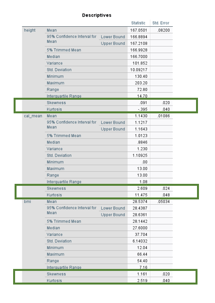
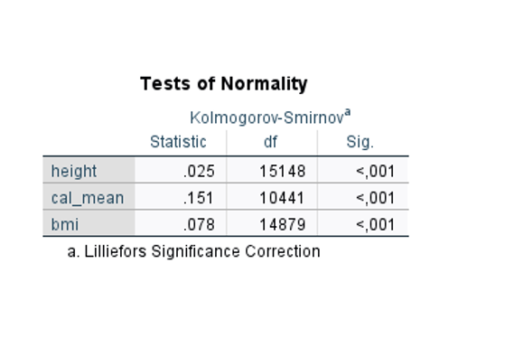
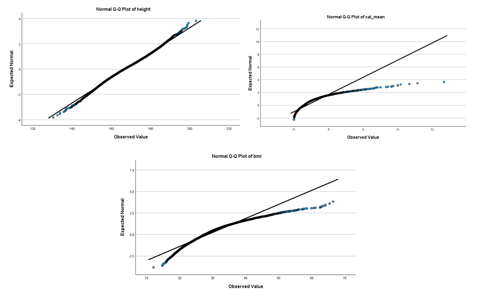

Praktikum 3
Einleitung: In dieser Stunde geht es um Konfidenzintervallen, Normalverteilung und Transformieren von Variablen.
Aufgabe 1: Schätzen mit Konfidenzintervallen
Lassen Sie sich 95% Konfidenzintervalle der Mittelwerte für die Variablen „height“ und „mortstat“ angeben
💡 SPSS:
ANALYSE → DESKRIPTIVE STATISTIK → EXPLORATIVE DATENANALYSE
„height“ und „mortstat“ als abhängige Variablen zuordnen. Unter Anzeige „Statistiken“ auswählen. Unter Statistiken können die Grenzen des Konfidenzintervalls festgelegt werden. Unter Optionen wählen Sie „paarweiser Fallausschluss“ aus.

Show Results
| Variablen | Mittelwerte (95% Konfidenzintervalle) |
|---|---|
| height | 167.05 (166.89 - 167.21) |
| mortstat | 0.26 (0.25 - 0.27) |
Verständnisfrage zum Konfidenzintervall:
Welcher Aussage stimmen Sie zu:
Der wahre Wert der Grundgesamtheit liegt bei einem 95% Konfidenzintervall mit einer Wahrscheinlichkeit von 95% innerhalb der Grenzen des Intervalls.
Ein Konfidenzintervall von 95% sagt, dass bei mehrfacher Ziehung einer Stichprobe in 95% der Fälle Intervalle entstehen, die den wahren Wert der Grundgesamtheit enthalten. Ob das Konfidenzintervall im Einzelfall den wahren Wert enthält, lässt sich nicht beantworten.
Show Results
✓ b) Ein Konfidenzintervall von 95% sagt, dass bei mehrfacher Ziehung einer Stichprobe in 95% der Fälle Intervalle entstehen, die den wahren Wert der Grundgesamtheit enthalten. Ob das Konfidenzintervall im Einzelfall den wahren Wert enthält, lässt sich nicht beantworten.
Aufgabe 2: Prüfen der Normalverteilung
Sie haben in der Vorlesung verschiedene Möglichkeiten zum Testen auf das Vorliegen einer Normalverteilung kennengelernt. In Kürze sind dies: 1. Die Bewertung von Schiefe und Kurtosis (Wölbung, sollte 3 sein – beschreibt die Steilheit / Spitzigkeit der Verteilung)
Statistische Tests auf Normalverteilung
Graphische Tests auf Normalverteilung
Das Wissen über die Verteilung der Variablen kann u.A. bei der Auswahl des richtigen Tests helfen.
Prüfen Sie die Merkmale height, bmi und cal_mean auf Normalverteilung.
💡SPSS:ANALYSE → DESKRIPTIVE STATISTIK → EXPLORATIVE DATENANALYSE
Anzeige von „Statistiken“ auf „Beides“ ändern. Unter Statistiken „Deskriptive Statistik mit Konfidenzintervall 95%“ auswählen. Unter Diagramme „Normalverteilungsdiagramme mit Tests“ und „Histogramm“ auswählen. Variablen in das Feld „abhängige Variablen“ ziehen. Zuletzt unter Optionen „paarweisen Fallausschluss“ auswählen
Testen Sie graphisch auf Normalverteilung, indem Sie sich für height, bmi, and cal_mean jeweils das Histogramm und das Q-Q-Diagramm ansehen.
Hinweis: Im Rahmen des Praktikums müssen Sie das trendbereinigte Q-Q-Diagramm nicht beachten
Entscheiden Sie abschließend, bei welcher Variable Sie von einer Normalverteilung ausgehen möchten

Die Bewertung von Schiefe und Kurtosis

Statistische Tests auf Normalverteilung

Graphische Tests auf Normalverteilung
- Histograms

- Q-Q plots

Show Results
| Variable | Normalverteilt? |
|---|---|
| height | Ja |
| cal_mean | Nein |
| bmi | Nein |
Aufgabe 3: Transformieren von Variablen
Führen Sie eine logarithmische Transformation der Variable cal_mean durch.
Hinweis: Hier wird der natürliche Logarithmus verwendet.
💡 SPSS:
Funktionsgruppe „Arithmetisch“ auswählen und Doppelklick auf „Ln“ Doppelklick auf die zu transformierende Variable cal_mean.

Schauen Sie sich das Histogramm mit Normalverteilungskurve für die neu erstellte Variable an:
💡 SPSS:
☑ Unter Diagramme Histogramm und Normalverteilungskurve auswählen.
Show Results